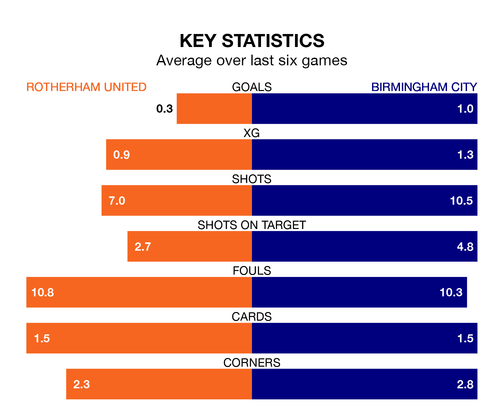

Struggling Rotherham United face Birmingham City at the AESSEAL New York Stadium on Saturday looking to build on a win in their last league outing.
After securing all three points with a 0-1 victory over Swansea City on April 13, the Millers sit bottom of EFL Championship.
They travel to play a Birmingham side 21st in the standings, who also won their last match, 3-0 against Coventry City.
In the last 10 years, Rotherham and Birmingham have played each other on 13 occasions. Rotherham won two of them, Birmingham seven, and they drew four times.
On average, the Millers scored 0.8 goals and the Blues 1.4 in those matches.
Their last meeting was on December 2, when they played out a 0-0 draw.
Rotherham are in bad form in EFL Championship, with one win and a draw from their last six games.
With two wins and four losses over that period, Birmingham's form is slightly better – they have taken six points from 18, compared to United's four.
With 32 goals in 43 games so far this season, the Millers are the league's lowest scorers with 0.7 goals per game. And they are conceding more than average, letting in 85 goals at a rate of 2.0 per game.
City are also below average scorers, with 1.1 goals per game, compared to a league average of 1.3. They have conceded 1.5 goals per game.
Saturday's match will be refereed by Keith Stroud, who has taken charge of 22 EFL Championship games so far this season, issuing two red cards and booking 109 players. He has awarded three penalties.
The last Rotherham game Stroud refereed was a 4-3 away loss to Ipswich Town on February 20. His last Birmingham match was their 1-1 draw away at Hull City on March 5.
Updated: 15:40 (UTC), 18/04/24